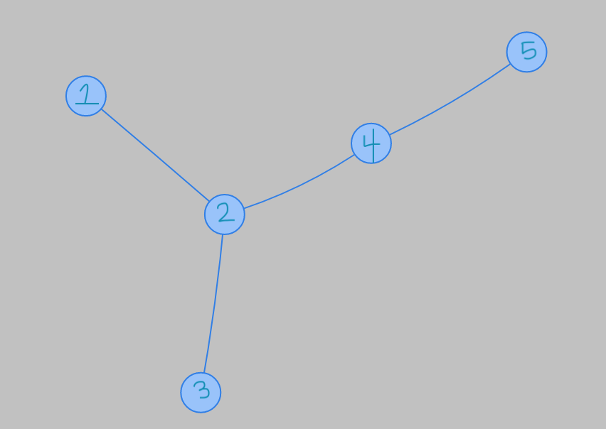
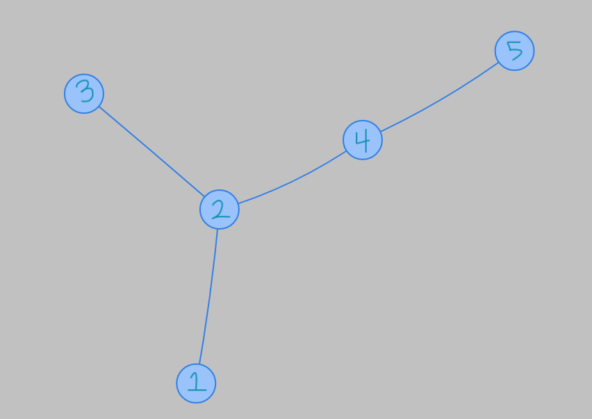
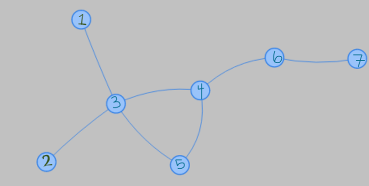
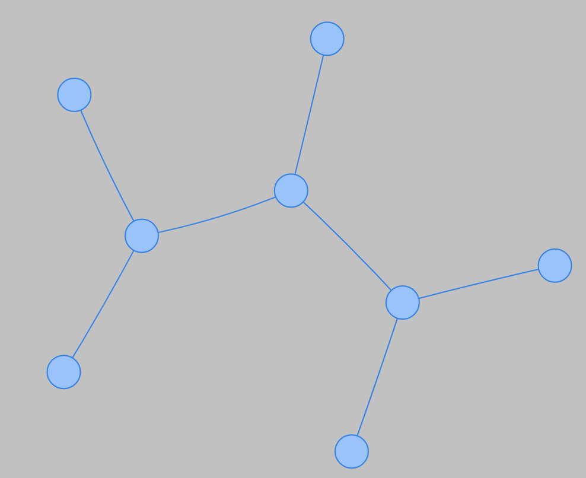
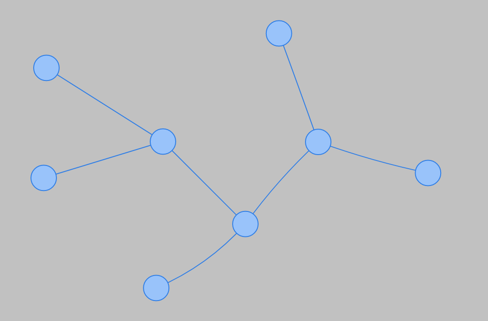
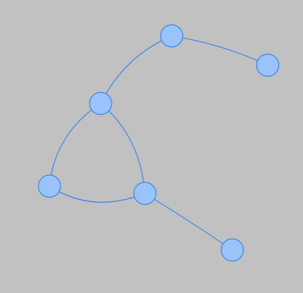

NAP — Play a Previous Puzzle
Play Today's Puzzle
Select a Puzzle
How To Play
What is NAP?
NAP stands for No Automorphisms, Please!
The goal is to add edges and nodes to the
graph
to break all symmetries. The fewer added edges and nodes, the better! There's a new puzzle every day.
What counts as a symmetry?
In this case, a symmetry is any 'relabeling' of the nodes that maintains the structure of the graph. If we take some node, we can call the set of all nodes connected to it via some edge its neighbors. Then a symmetry of a graph shuffles some nodes around, but makes sure each node has the same neighbors. Such a symmetry is called an
automorphism
.
For example, we can label the following graph and its one symmetry.  Sometimes, the automorphisms look like the standard symmetry we're used to—reflections and rotations—like how the one above looks like a reflection. But often it can be more subtle and not look like any geometric symmetry. For example, the following is an automorphism that doesn't conform to our standard notion of reflection or rotation:
 Note that the actual physical movement of the graph doesn't affect its symmetries, so the following two graphs are the same:
 so they have the same symmetries.
This is an example of a graph with no automorphisms (a winning graph!):

Manipulating the graph
Click the
Edit
button, then click
Add Node
and click anywhere near the graph to add a node. To add an edge, click
Add Edge
, then drag click your cursor from one node to another. When you think you have a graph with no symmetries, click
Check Symmetries
! You get 1 point for each edge added and 2 points for each node added. Your goal is to minimize your score.
If a node leaves the screen by accident, you can zoom out (or in) with the navigation buttons.
More about graph symmetries
In fancier terms, the goal of this game is to find the minimal assymetric graph with the given graph as a subgraph; that is, the smallest graph with a trivial automorphism group. The trivial automorphism is the identity, so when the game says there are 2 automorphisms, for example, there is, as we defined it above, only one symmetry.
The computation is powered by
SageCell
and the graph interface is powered by
vis.js
. Code can be found on my
Github
. Pull requests welcome! :)
Feedback is also welcome: feedback [ at ] beanway [ dot ] me
NAP 1.3.0
Got It!
×